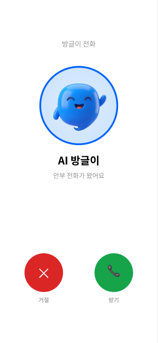
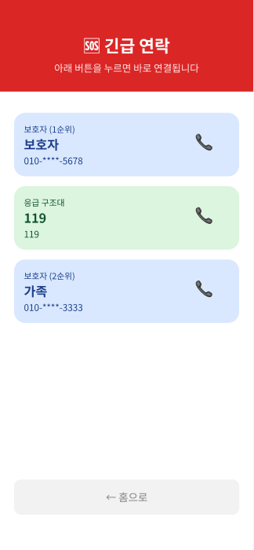

약속한 시간,
방글이가 먼저 겁니다
● 통화 중 · 02:12
가족의 통화 사이에, 방글이
오늘 드신 점심, 오랜만에 만난 친구.
다음 전화에서 나누고 싶은 이야기가 쌓입니다.
방글이가 그 사이의 안부를 함께 챙깁니다.
AI방글이는 부모님께 정해진 일정에 안부전화를 걸고, 보호자가 앱에서 통화 후 소식과 기록을 확인하도록 돕는 가족용 서비스입니다. 부모님이 기존 전화로 받는 방식과 앱을 설치해 이용하는 방식을 제공합니다.
부모님은, 편안하게
어려운 조작 없이, 전화를 받고 이야기하세요.
식사부터 날씨까지 방글이가 안부를 여쭙니다.
어머니 안녕하세요. 저 방글이에요.
오늘 점심은 드셨어요?
식사 안부 대화 예시
전화 방식 기준 · 통화 일정과 시간은 요금제에 따라 다릅니다.
가족은, 한눈에
방글이와 나눈 대화를 보호자 앱에서 확인하세요.
바쁜 날에는 요약으로,
더 궁금한 날에는 대화 기록으로.
국수를 드시고, 오랜만에 이야기를 나누셨어요.
대화 전문은 부모님이 동의하신 경우에만 확인할 수 있습니다.
방글이가 직접 안내해요
멀리 있어도, 마음은 가까이.
오늘 부모님 안부를 확인해 보세요
다음 통화에서 대신 여쭤볼게요.
다음 통화에서 방글이가
담아 여쭤볼게요.
알림을 눌러 통화 내용을 확인해요
어머니, 오늘 점심은 잘 드셨어요?
응, 친구랑 국수 먹었어.
친구분과 맛있게 드셨군요! 오늘은 어떤 이야기를 나누셨어요?
오랜만에 만나서 좋았지.
마이크를 누르고 편하게 말해 주세요.
어머니가 무릎이 안 좋으신데,
요즘 무릎은 어떠신지 여쭤봐.
안녕하세요. 방글이에요. 부모님께 전하고 싶은 이야기, 제가 함께할게요.
아이폰 형태로 재구성한 기능 소개 시연 · 예시 데이터입니다. 실제 전화나 부탁 전송은 실행되지 않습니다.
방글이 앱 목소리로 안내합니다. 알림음은 시연용 효과음입니다.
방글이가 하는 일

친구분들과 점심을 드셨다고 이야기하셨어요.
전화를 걸기 전에 기상청 특보를 먼저 확인합니다. 전화가 한 통 더 오는 게 아니라, 늘 받으시던 그 통화가 오늘 날씨에 맞춰집니다.
어르신이 편하게 알아들으실 수 있는 속도와 말투로 이야기합니다.

평소 하던 말투로 한마디만 녹음하세요. 방글이가 자연스러운 존댓말로 바꿔 여쭤봅니다.
화면과 대화는 시연 예시입니다. 통화 일정은 이용 방식과 요금제에 따라 다릅니다.
보호자 앱 이용 방법
부모님께 여쭤보고 싶은 이야기를 입력하거나 음성으로 남겨 주세요.
저장한 부탁은 방글이가 부모님과 나누는 다음 안부 대화에 담깁니다.
통화가 끝나면 보호자 앱에서 알림과 부모님의 소식을 확인하세요.
통화 요약을 살펴보고, 부모님이 동의하신 경우 대화 전문도 확인할 수 있습니다.
통화 일정과 포함 시간은 이용 방식과 요금제에 따라 다릅니다. 방글이와 부모님이 나눈 대화를 안내하며, 가족끼리 직접 건 일반 전화는 기록하지 않습니다.
우리 가족이 함께
같은 안부를 함께 확인하고,
부모님께 드릴 다음 전화를 준비하세요.
가족이 남긴 음성 메시지를
방글이의 안부 대화에 담아보세요.
유료 구독 없이 · 복지정보 조회 무료
부모님이 사시는 지역과 연령에 따라
대상이 될 수 있는 복지제도를 찾아보세요.
안부전화 요금제를 결제하지 않아도
방글이 앱에서 무료로 확인할 수 있어요.
유료 구독 없이 조회 · 지원 대상과 신청 정보 확인
부모님께 해당될 수 있는 혜택,
함께 살펴볼까요?
부모님 정보 확인
등록한 지역과 연령을 바탕으로
관련 지원사업을 살펴봐요.
복지 안내
신청 대상과 지원 내용을 확인하세요.
사업별 지원 조건을 살펴보세요.
지원사업 상세 안내
사업별 상세 안내에서
신청 조건과 방법을 확인하세요.
앱 이용 흐름을 재구성한 시연 · 사업은 지역과 조건에 따라 달라집니다.
실제 지원 여부는 각 사업의 신청 조건과 심사 결과에 따라 달라집니다.
부모님께 편한 방법으로
부모님 앱 설치 없이
휴대폰·집전화로 안부를 받습니다.
부모님 스마트폰에 앱을 설치하고
방글이와 안부를 나눕니다.
부모님께 맞는 이용 방식
| 구분 | 전화 방식 | 앱 방식 |
|---|---|---|
| 부모님 이용 기기 | 쓰시던 휴대폰·집전화 | 앱을 설치한 스마트폰 |
| 부모님 앱 설치 | 필요 없음 | 필요 |
| 보호자 확인 | 보호자 앱에서 확인 | 보호자 앱에서 확인 |
| 월 요금 | 19,900~29,900원 | 5,900~14,900원 |
| 30일 무료 체험 | 앱 방식 체험과 구분 | 매일 5분 통화 |
월 요금은 부가세 포함입니다. 통화 횟수와 시간은 아래 요금제별 조건을 확인해 주세요.
스마트폰이 없어도 괜찮아요. 쓰시던 휴대폰·집전화로 그대로 받으실 수 있어요.
표시한 금액은 모두 부가세 포함입니다.방글이가 일반 전화망으로 직접 전화를 드리기 때문에 통신 비용이 더해집니다.
월 · 부가세 포함
하루 670원꼴
월 · 부가세 포함
하루 830원꼴
월 · 부가세 포함
하루 1,000원이 안 돼요
통화는 정해진 시간 안에서 말씀을 끊지 않고 마무리합니다.
30일 무료 체험으로 시작하고, 필요에 따라 바꾸세요.
표시한 금액은 모두 부가세 포함입니다.30일
월 · 부가세 포함
하루 200원꼴
부모님 한 분 더 등록 시
월 4,900원 · 월 결제
월 · 부가세 포함
하루 300원이 안 돼요
부모님 한 분 더 등록 시
월 7,900원 · 월 결제
월 · 부가세 포함
하루 500원이 안 돼요
부모님 한 분 더 등록 시
월 13,900원 · 월 결제
하루 금액은 월 요금을 30일로 나눈 참고 금액이며 실제 결제는 월 단위입니다.
구독하기는 운영 중인 결제·관리 페이지로 연결됩니다.
네. 보호자 앱의 안부 부탁하기에서 부모님께 여쭤보고 싶은 말을 입력하거나 음성으로 남길 수 있습니다. 저장한 부탁은 다음 안부 통화에 전달됩니다.
이용 순서 확인보호자 앱에서 통화 후 알림과 요약을 확인할 수 있습니다. 대화 전문은 부모님이 동의하신 경우에만 확인할 수 있습니다.
전화 방식은 월 19,900~29,900원, 앱 방식은 월 5,900~14,900원입니다. 모두 부가세 포함이며, 통화 횟수·시간은 요금제마다 다릅니다. 전화 방식에는 실제 전화 통화료가 포함됩니다.
이용 방식과 요금 비교다릅니다. 복지정보는 안부전화 유료 구독 없이 앱에서 찾아볼 수 있습니다. 30일 무료 체험은 부모님 스마트폰에 앱을 설치해 매일 5분 안부 통화를 체험하는 방식입니다. 복지 지원 여부는 각 사업의 신청 조건과 심사에 따라 결정됩니다.
무료 복지정보 안내네. 안부전화 유료 요금제를 구독하지 않아도 방글이 앱을 설치해 부모님께 해당될 수 있는 복지 지원사업을 찾아볼 수 있습니다. 실제 지원 여부와 신청 방법은 각 사업의 상세 안내를 확인해 주세요.
전화 방식을 선택하면 부모님은 앱 설치 없이 쓰시던 휴대폰이나 집전화로 받으실 수 있습니다. 보호자는 앱에서 통화 요약을 확인합니다.
이 페이지에서 소개하는 요약은 방글이와 부모님이 나눈 안부 대화에 대한 것입니다. 가족끼리 직접 나눈 일반 전화 내용을 기록하는 기능이 아닙니다.
가족에게 통화 요약이 전달됩니다. 대화 전문은 부모님이 동의하신 경우에만 열람할 수 있습니다.